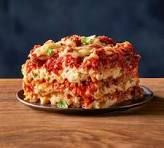

Lasagna

Description
This lasagna recipe is a classic Italian dish made with layers of rich meat sauce, creamy béchamel, and perfectly melted cheese. It's hearty, comforting, and perfect for family dinners.
You'll learn how to layer the noodles, prepare the sauce, and bake it to golden perfection. A great recipe to practice your HTML and cooking skills!
Ingredients
- 12 lasagna noodles
- 1 lb ground beef
- 2 cups marinara sauce
- 1 cup ricotta cheese
- 2 cups shredded mozzarella cheese
- 1/2 cup grated Parmesan cheese
- 1 tsp salt
- 1/2 tsp black pepper
- 1 tsp dried basil
Steps
- Preheat your oven to 375°F (190°C).
- Cook the lasagna noodles according to package instructions.
- In a skillet, cook ground beef until browned; drain excess fat.
- Add marinara sauce to the beef and simmer for 5–10 minutes.
- Spread a thin layer of sauce on the bottom of a baking dish.
- Layer noodles, sauce, ricotta, and mozzarella. Repeat layers until ingredients are used.
- Top with remaining mozzarella and Parmesan cheese.
- Bake uncovered for 25–30 minutes or until cheese is golden and bubbly.
- Let cool for 10 minutes before serving.
Home